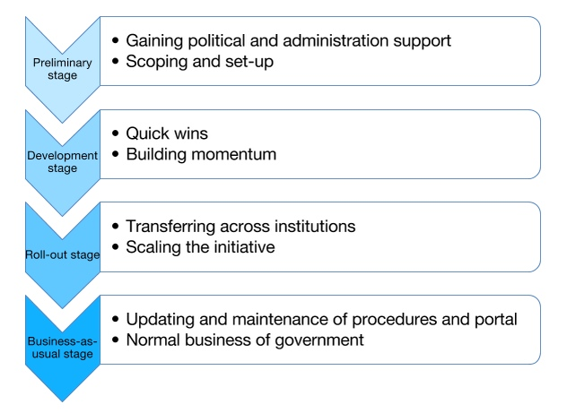

How to plan and budget an open data initiative

Image by Ervins Strauhmanis CC by Attribution 2.0
Contents
- Background and disclaimer
- Ways to estimate costs
- The phases of an open data initiative
- Preliminary stage
- Development stage
- Roll-out stage
- Business as usual stage
Background
In September 2014, the UNDP and the Partnership for Open Data (the World Bank, the Open Data Institute and Open Knowledge) brought together open data and transparency leaders from the governments of 15 countries from across Eastern Europe and Central Asia in Istanbul. While some of the participating countries have made great strides in implementing open data, others are in the early stages of their open data initiative.
A key question from these leaders was how much their government should expect to spend on an open data initiative – this information would determine the size of the budget they should request.
In an extended discussion between the group and assembled international experts an initial list of cost headings was developed, and this was extended and refined by further collaborative efforts facilitated by the Open Data Institute (ODI).
This guide draws together the conclusions and further input from other experienced government leaders in open data. It was developed to support open data leaders in government, and those considering implementing an open data initiative.
Disclaimer
This guidance note does not seek to give specific figures, and does not do so. Actual costs will depend both on the quantity of the various resources required to successfully implement an open data initiative and on the salary and other rates for the required inputs. Both can vary widely.
Actual budgetary requirements will be influenced by the scope of the open data initiative, as well as the extent of relevant work, such as digitisation of data, which needs to be done before the programme starts.
Ways to estimate costs

Image by Martin Fisch, CC by SA 2.0
Purpose
Cost estimates are a necessary part of any government initiative: open data programmes will need to be budgeted for, and can then be considered by decision makers.
Cost estimates are typically required for:
- Allocating budget(s) for the open data initiative - both for the central team and within individual ministries, departments or agencies.
- Budgets usually need to reflect the additional and specific resources required for a project; they would not usually need to reflect the cost of using existing resources unless further capacity was required.
- A business case for the open data initiative. These generally reflect the value of all resources consumed by the project
Case study: In 2010 the UK Government decided that individual payments by each ministry would be published as open data. Ministries were instructed to do this within their existing budgets, so there was no additional budgetary cost. However, to evaluate the effectiveness of the initiative, it was necessary to estimate the resources consumed from the existing budgets.
Different resource types
In addition while some organisations treat staff and non-staff resources both as costs, some organisations control staff in terms of numbers of posts and non-staff resources in financial terms. In the latter case staff resources may not need to be costed, and staff and non-staff provision may not be interchangeable.
Internal and external resources
There may be differences between the costs of equivalent services depending on whether they are provided by internal resources or by "bought-in" external resources. For instance, external consultants often have a higher day-rate than in-house staff, (although against that needs to be remembered that it should not be necessary to pay for the costs of training of consultants, or for their time while being trained). Conversely external IT resources such as cloud computing may be cheaper than in-house services if government standards for security and resilience do not need to be met.
Factors impacting on cost profiles
Some of the required resources for open data initiatives can be purchased in different ways that give different cost profiles over time. For instance an in-house open data platform will typically require up-front expenditure to buy servers and to develop software, whereas a "software as a service" may involve lower up-front costs but higher recurrent costs.
The phases of an open data initiative
A typical open data initiative consists of a series of stages:

In addition, an open data initiative should have a number of evaluations and reviews to assess progress and to make recommendations for further improvements.
Preliminary stage

Image by Pink Sherbet Photography, CC by 2.0
The preliminary stage is crucial for securing political and administration support and for developing the business case for an open data initiative. In addition, resources will need to be assigned to develop a strategy for building an initiative, and for the securing of financial and other resources which would implement the strategy. The stage normally starts with a senior decision maker authorising exploratory work and normally ends with a political declaration to launch the open data initiative. This process takes at least six months, and often at least a year.
Once political support for the exploration of the feasibility of an open data initiative has been secured (for example a statement of support, or an Open Government Partnership Action Plan), there needs to be an assessment of the action required. An example of this would be the Open Data Readiness Assessment, developed by the World Bank (a detailed user guide is also online). Other methodologies, such as the ODI’s Strategic Assessment, have been developed.
The assessment must:
- Define the objectives of the initiative in terms of the desired outcomes and benefits
- Identify the stakeholders, and survey their views and concerns
- Assess existing capability within the government and in civil society
- Develop a strategy to implement a successful open data initiative
- Assign responsibilities for implementation
This study may be done internally, by external consultants, or by a combination of resources. Financial provision would need to be made for any external resources; it may also be required to secure any necessary dedicated in-house resources.
The results of the assessment will inform the second stage of the preliminary stage: planning. This planning will require internal resources, as well as possible involvement of external experts to provide strategic advice. The team would need to:
- Secure political agreement for the open data initiative
- Produce a detailed strategy for the initiative, and a detailed project plan to achieve it.
- Secure agreement to the estimated financial and resource requirements
- Recruit and train key members of the central team to take the initiative forward
Development stage

Once the initiative’s strategy is set, the staff need to work on developing the detailed policy and processes, creating the open data portal, and building up the team’s capacity through training and personal development. Lastly, the team will need to prioritise those datasets that should be released first. These datasets would need to be easy to open in the early stages of the initiative. When the portal has been developed and launched, it will then be a platform for the datasets.
This period of time is about building momentum, making rapid advances whilst developing a solid foundation to develop into a larger initiative. Both internal and external stakeholders must be engaged to gain a better idea of how to build the initiative.
Central team
Most successful open data initiatives have a small "central team" to lead and co-ordinate the work. The team’s staff should have a range of skills and experience, particularly policy, developer, and project management specialists. The team would be responsible for:
- Development of detailed policy, processes and standards
- Selection or drafting of a suitable open licence
- Development of any necessary legislation
- Securing political and legislative approvals as necessary
- Sponsorship of the development of the "open data portal"
- Communicating the work of the initiative within government, including briefing political sponsors, and raising external awareness.
- Arranging suitable training and capacity building for other ministries (and themselves)
- Liaison with other agencies, external stakeholders, and international partners
- Project and programme management
The size and required skills of the central team will depend on a variety of factors. Firstly, whether other central agencies can support the initiative by committing their own resources (for example if the Office of the Government Chief Information Officer/eGovernment Unit are willing to develop technical standards as part of their existing responsibilities).
Secondly, the balance of responsibilities between the central team and individual agencies (for instance, responsibilities for the publication tasks such as putting metadata onto the portal and actually putting the data online). In many initiatives, the central team take on a relatively high level of responsibility during the development phase: while the platforms and processes are under development and while capability is limited across government. The central team then devolves responsibility to individual agencies during the roll-out phase and takes on a co-ordination and management role.
Thirdly, the pace and ambition of the initiative. The greater the ambition, and the shorter the period of time for launch, the greater the need for dedicated resources.
Lastly, the extent to which team members have other responsibilities. In general, it is better to have a smaller number of dedicated staff than a larger number of staff who must balance other responsibilities.
Many open data initiatives have been successfully launched with a central team of 4-10 full-time staff. The number of staff has depended on the extent to which they have been able to get colleagues within government to deliver on their behalf. Some single "open data co-ordinators" have reported being overwhelmed; and it can be difficult to find all the necessary policy, technical and management skills in any one individual.
Governance
The central team is usually overseen by a steering committee or advisory board within government. Normally this does not involve extra costs - members of the committee are appointed as part of their normal responsibilities. However, some initiatives involve external stakeholders in their steering committee and funding may be required for their expenses or, exceptionally, for honorariums.
Portal
Most open data initiatives create a portal: a single web presence where people can find open government data and associated information. The detailed options for a portal are outside the scope of this paper, but there are three broad approaches and each has a different cost profile.
A custom web development would incur initial costs of design and software development. There would also be costs associated with the negotiation and award of contracts to a development company or the management of developers. All these costs would be incurred in the development period. There would also be ongoing hosting costs.
There are several established packages for open data portals. Most leading packages are "open source" so there is no cost of software purchase or recurrent software licensing fee. However, using a package does incur installation costs, initial customisation costs (if required), and web design and branding. These costs would all be incurred in the development period. There would also be hosting costs (see below).
There are a number of established "software as a service" providers who provide cloud-based open data portals for a recurrent fee (which may be related to the volumes of data or other parameters). Some initial setup, web design and branding services may or may not be provided free. There would also be costs associated with the negotiation and award of a contract to the service provider.
Different approaches to portal software also lead to different hosting requirements and costs. Hosting of a "software as a service" is usually part of the service, but for other approaches hardware and associated services would be required. The options would include:
- Use of existing government resources or IT service contracts
- Purchase of new hardware, with associated installation and commissioning costs
- Use of cloud services
It should be emphasised that different portal approaches alter not only the total cost but also the distribution of costs among the development phase, the rollout phase and the business as usual phase. It is important to allow for all these costs over the whole lifecycle of the initiative.
Training and capacity building
During the development phase, costs may also be incurred in training staff in the necessary skills to drive the initiative forward. Learning from the experience of others is an important contribution to success. These could include:
- Training of the central team in open data concepts, including study visits or international courses (such as those offered by the ODI)
- Training central team staff in the management of the open data portal
- Training relevant staff (central team and any staff from relevant data owning agencies) in the necessary skills to publish data and in the use of the portal software
- Training data publishers in the skills necessary for the preparation of "quick win" datasets for publication, including ensuring they comply with privacy and security legislation
Publishing initial "quick win" datasets
Most open data initiatives launch their portal with a credible but limited number of datasets. These are often datasets that are relatively easy to prepare for publication and that do not raise difficult policy questions. For instance, they may include datasets already available in printed form but now made available in re-usable form. Therefore, the costs of preparing each dataset for publication should not be significant and should be contained within existing budgets of the data-owning ministry.
However, uploading the datasets to the portal and completing the metadata can be time-consuming if there are a significant number of datasets to do in a short time, and allowance may need to be made for that. Sometimes the loading of the initial datasets is done by the central team themselves, and so allowance for the task to be done in a short time needs to be made in the staffing of the team. Spread out over a period and across data-publishing agencies this cost might be contained within existing roles.
Communications and engagement
The central team will need to ensure communications and engagement with various stakeholders in open data, for example government, businesses, civil society organisations, and the academic community. Provision for this should be made in the staffing of the central team. They should also be able to leverage professional communication skills from elsewhere in their sponsor organisation. However it may be necessary to make financial provision for:
- Stakeholder meetings or events to discuss the plans for the open data initiative
- A basic web presence explaining the initiative
- Promotional materials and work to engage with journalists, civil society organisations etc
In addition the budget should provide for a launch event to launch the portal and the initial collection of datasets. This would need to cover any costs associated with venue, catering, advertising and attendee management.
Roll-out stage

Image by Alper Çuğun, CC by 2.0
During this stage, individual ministries will prepare and publish increasing amounts of their data. Processes surrounding the release of open data will be improved and be operated by a wider range of officials. The use of open data will be promoted to build a more sustainable initiative.
Central team
The staffing and skills required in the central team will be different in the roll-out phase. The emphasis will evolve from directly-performed tasks to the co-ordination of the release of data by agencies, the management of the overall initiative and the continuing development of policy and standards. This may be more time-consuming than previously because the scale of the initiative will have increased significantly.
The central team may need to be resourced to perform additional tasks:
- Being a central point to receive and handle requests for data, including negotiating with data-owning agencies on what data can be published
- Promoting data liberalisation across the government and persuading agencies to release their data (including helping allies within those agencies convince their colleagues)
- Dealing with difficult (or precedent-setting) cases of data release including privacy and anonymisation, national security concerns and other issues
- Conducting external communications and presentations to encourage the use of data, and dealing with questions from potential data users or others in the "open data ecosystem".
Governance
Continuing provision would need to be made for governance costs on a similar basis as during the development phase. The central team can use some of the governance team to share the communications load, so provision should be made for any necessary expenses. The governance team can participate in communications work, and their positions would give them a wider audience.
Portal operation
Financial provision should be made for the operating costs of the portal. The budget will depend on the portal approach chosen: it may include hosting costs, system support and software maintenance, and recurrent charges to the service provider. Some "software as a service" portals have thresholds for number of datasets or for traffic levels, beyond which charges may increase; it is important to allow for these.
Portal improvement
Many open data portals are launched as "betas". It would be prudent to allow some budget for additional developments for increased functionalities, design and user experience improvements, and optimisation in the light of analytics and user feedback. Even for a “software as a service” approach, this is likely to be charged-for work.
Preparing datasets for publication
There are a number of costs associated with preparing additional datasets for publication after the initial launch of the portal. The organisational structure will influence where the responsibility of publishing data lies. After the initial launch, many open data initiatives transfer more of the day-to-day tasks of publishing data to individual agencies once they have been trained. This work may require additional budget or may be containable within the existing resources of the agencies concerned; if the work is done by the central team the cost will normally materialise into additional budgetary requirements.
The tasks may include:
- Digitisation of paper records or upgrading of data systems
- Development of software and processes to extract data from operational systems
- Privacy and security assessments
- Redaction, anonymisation or other modification of the data
- Creating metadata
- Uploading the data onto the portal and attaching the metadata
Open data resources within individual agencies
Many open data initiatives use a "hub and spoke" organisational model for the roll-out and subsequent phases, with the central team being complemented by focal points in each participating agency. An agency’s focal point would typically:
- Co-ordinate publication of data within that agency
- Arrange training and other capacity building for the agency’s staff
- Handle the uploading of the agency’s data
- Engage with the users of that agency’s data
These tasks are sometimes conducted as part of an existing role, for example by an Access To Information officer or IT manager, and may not require additional budget.
Training and capacity building
During the roll-out phase there will be additional costs in training and capacity building across a widening range of agencies. These could include:
Training relevant staff in agencies, such as "focal points", in the necessary skills to publish data and in the use of the portal software
Training relevant staff in agencies on methods of data publication
Development of specialist skills, such as effective anonymisation
Loss of income from data
Agencies that currently charge for data may need to make provision for the net loss of income to the agency. Whether a loss of income would need to be funded can be a complex issue, and will depend on factors such as:
- Whether the agency retained any income (in some jurisdictions any income has to be remitted to the Ministry of Finance centrally)
- What savings could be made by ceasing to charge - for instance sales and marketing, account management, banking and other financial charges and enforcement of intellectual property rights.
- How much lost income from data can be recovered from charges for value-added services (for instance making information about registered companies free and slightly increasing charge for company registration).
Most open data initiatives do not make a central provision for loss of income and prefer to address questions of loss of income on a case-by-case basis.
Promoting data re-use
To sustain the effective use of open data, initiatives should include a budgetary provision to promote and facilitate demand. This may cover:
- The appointment of an "Open Data Champion" to promote the availability of open data and its use
- Hackathons and other developer-orientated events
- Innovation challenges and competitions, for instance Open Data Challenge Series
- Seed capital to turn a small number of compelling concepts into startups as exemplars
- Business round-tables or other events of engaging potential business users with open data from selected agencies
- Capacity building and awareness raising to promote the re-use of data within government
- Sponsorship of an arms-length/independent body to promote the use and re-use of open data (such as an ODI "node")
Business as usual stage

Image by Bill Smith, CC by 2.0
In this stage the publication and updating of data is part of the normal business of government and largely accomplished as part of standard procedures, although (as with Freedom of Information) a small unit may still be needed to ensure that the policy and processes keep up with requirements and that the open data portal is working effectively to meet its objectives.
The first year of the roll-out stage will inform the strategy of the business as usual stage. Ensuring the long term sustainability of an open data initiative is likely to require:
- Continuing central team effort to maintain and update the policy as necessary and to intervene in cases where the policy is no longer being effectively delivered. This resource could be part of a wider team (for instance the eGovernment office)
- Maintenance of the open data portal (including financing ongoing hosting costs, service provider costs, and development of functionality improvements and updates)
- Continuing publication of datasets by agencies as data for new time periods becomes available: unless the published data is regularly updated its value will soon diminish
- Maintaining engagement with data users inside as well as outside government